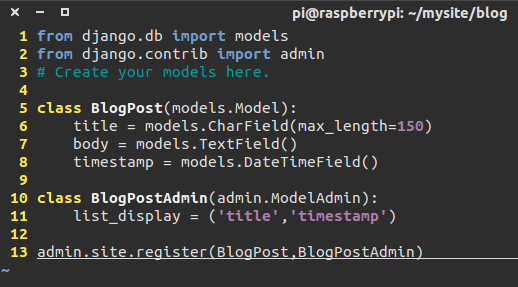
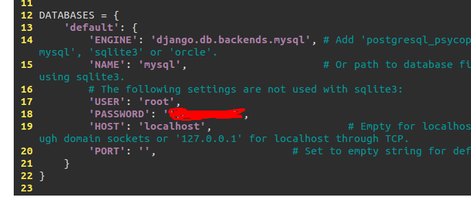
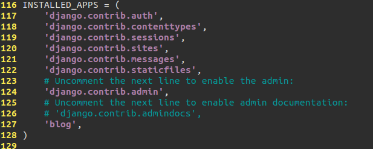
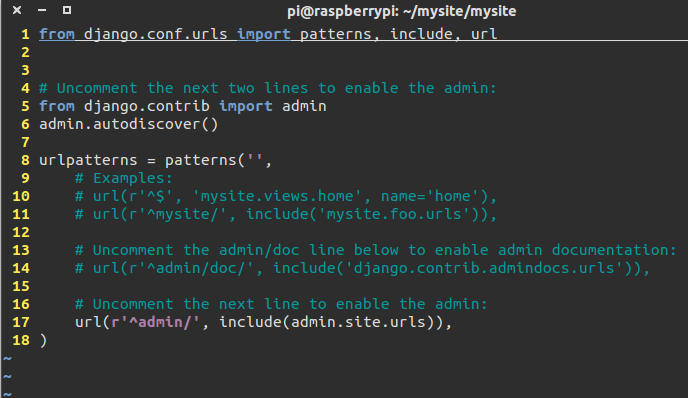

简单的配置一个blog
先安装各种软件，django，mysql，python-mysqldb等可以用esay_install直接安装，不详细赘述。
django-admin.py startproject mysite
然后切到/mysite目录下，有个manage.py
chmod u+x manage.py
./manage.py runserver 0.0.0.0:8000
就可以开浏览器看看什么效果了。
./manage.py startapp blog
cd blog
vim models.py

cd ../mysite
vim settings.py


vim urls.py

python manage.py shell
>>> from django.contrib.sites.models import Site
>>> Site.objects.create(pk=1, domain='ml-service.edx.org', name='ml-service')
http://x.x.x.x:8000/admin